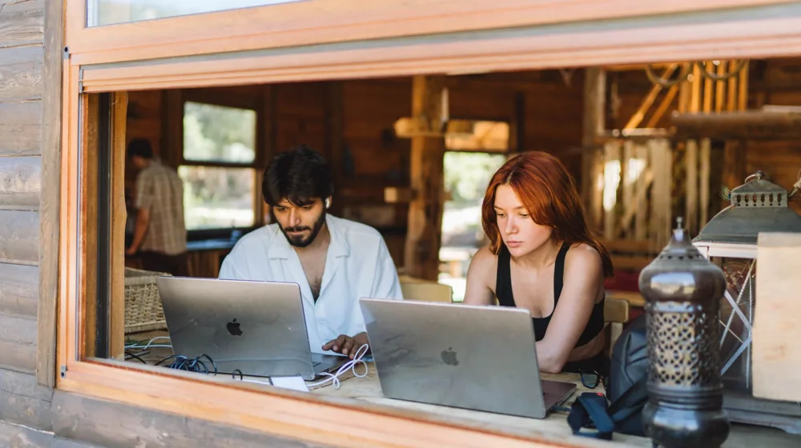

디지털 노마드를 위한 사찰 워케이션: 놓치지 말아야 할 체크리스트
사진: Saksham Vikram / Pexels (무료 이미지, 출처 표기)
사찰 워케이션, 왜 디지털 노마드에게 특별할까?

디지털 노마드라면 한 번쯤 꿈꿔봤을 새로운 워케이션. 답답한 도심을 벗어나 고즈넉한 사찰에서 평화롭게 일하는 모습을 상상해 보신 적 있나요? 사찰 워케이션은 단순한 휴식을 넘어, 업무 집중도를 높이고 정신적인 힐링까지 얻을 수 있는 특별한 경험을 제공합니다.
워케이션(Work+Vacation)은 일과 휴가를 병행하는 근무 형태로, 최근 유연한 근무 방식의 확산과 함께 큰 인기를 얻고 있습니다. 사찰 워케이션은 이러한 워케이션에 한국의 전통 문화와 자연환경이 결합된 형태로, 고요한 환경에서 몰입감을 높이고 싶거나, 평소 경험하기 어려운 템플스테이 문화를 접하고 싶은 디지털 노마드에게 특히 매력적입니다.
나에게 맞는 사찰 고르기: 핵심 고려사항
전국 다양한 사찰에서 워케이션 프로그램을 운영하고 있지만, 모든 사찰이 디지털 노마드에게 최적의 환경을 제공하는 것은 아닙니다. 나에게 맞는 사찰을 고르기 위해 다음 사항들을 꼼꼼히 체크해보세요. 템플스테이 통합 정보센터(www.templestay.com)에서 각 사찰의 정보를 미리 확인할 수 있습니다.
성공적인 사찰 워케이션을 위한 준비물
사찰은 일반적인 숙소와 달리 편의시설이 제한적일 수 있습니다. 꼭 필요한 물품들을 미리 챙겨가야 불편함 없이 업무와 휴식에 집중할 수 있습니다.
- 업무용 장비: 노트북, 충전기, 보조배터리, 무선 이어폰/헤드셋(화상회의 및 집중), 개인용 멀티탭(콘센트 부족 대비)
- 개인 위생용품: 칫솔, 치약, 수건, 비누, 샴푸 등 (사찰에서 제공하지 않는 경우가 많음)
- 편안한 복장: 활동하기 편안하고 단정한 옷, 두꺼운 외투(새벽 예불이나 밤산책 대비), 양말 여러 켤레
- 기타 필수품: 개인 상비약, 벌레 퇴치제, 독서용 책, 텀블러, 간단한 필기구 및 노트
사찰 워케이션 중 지켜야 할 기본 예절과 유의사항
사찰은 수행 공간이므로, 방문객으로서 지켜야 할 기본적인 예절이 있습니다. 이러한 점들을 미리 숙지하면 더욱 풍요로운 경험을 할 수 있습니다.
- 정숙 유지: 사찰 내에서는 큰 소리를 내거나 뛰어다니지 않고, 휴대폰 사용은 자제하며 진동으로 설정하는 것이 좋습니다.
- 복장: 과도하게 노출되거나 화려한 복장은 피하고, 단정하고 편안한 옷차림이 적절합니다.
- 공양 및 발우공양: 사찰의 규칙에 따라 정해진 시간에 식사하며, 음식물 낭비 없이 먹을 만큼만 받아 감사하는 마음으로 먹습니다.
- 개인 공간 존중: 다른 수행자나 방문객의 공간을 존중하고, 불필요한 소음이나 방해가 되지 않도록 주의합니다.
- 음주 및 흡연 금지: 사찰 경내에서는 음주와 흡연이 엄격히 금지됩니다. 육류 반입 또한 금지됩니다.
예약 및 신청 방법: 어렵지 않아요!
사찰 워케이션 프로그램은 주로 '템플스테이 통합 정보센터(www.templestay.com)'를 통해 예약하거나, 각 사찰의 공식 홈페이지에서 직접 신청할 수 있습니다. 2024년 8월 기준, 일부 사찰은 워케이션 전용 프로그램을 운영하며 업무 편의성을 강조하기도 합니다.
예약 전에는 반드시 다음 사항을 확인하세요. 첫째, 인터넷 환경 및 전기 콘센트가 충분한지. 둘째, 업무 가능한 별도 공간이 제공되는지. 셋째, 식사 시간 및 프로그램 참여 여부가 워케이션 일정과 조화롭게 조절 가능한지입니다. 궁금한 점은 해당 사찰에 직접 문의하여 정확한 정보를 얻는 것이 가장 좋습니다.
사찰 워케이션 200% 활용 팁
단순히 업무 공간만 옮기는 것을 넘어, 사찰 워케이션의 특별함을 온전히 누리려면 몇 가지 팁을 활용해 보세요.
- 업무 시간 외 적극적인 참여: 사찰에서 제공하는 명상, 차담, 새벽 예불, 걷기 명상 등의 프로그램에 참여하여 업무 스트레스를 해소하고 정신적 안정을 찾을 수 있습니다.
- 디지털 디톡스 시도: 정해진 업무 시간 외에는 휴대폰이나 인터넷 사용을 최소화하고, 자연 속에서 온전히 자신에게 집중하는 시간을 가져보세요. 새로운 영감을 얻는 계기가 될 수 있습니다.
- 자연을 벗 삼아 휴식: 사찰 주변의 숲길이나 산책로를 걸으며 자연의 소리에 귀 기울이고, 신선한 공기를 마시며 재충전하는 시간을 가지면 업무 효율을 높일 수 있습니다.
사찰 워케이션은 디지털 노마드에게 업무와 힐링을 동시에 잡을 수 있는 특별한 기회입니다. 이 체크리스트를 활용하여 성공적인 워케이션을 계획하고, 몸과 마음을 정화하는 귀한 시간을 보내시길 바랍니다. 정확한 프로그램 내용, 시설 정보, 신청 기간 등은 각 사찰의 공식 홈페이지나 템플스테이 통합 정보센터에서 다시 한번 확인하시길 권장합니다.
🔗 이 글도 함께 보면 좋아요: 귀농귀촌 지원금, 놓치지 마세요! 유형별 조건과 신청 완벽 가이드
관련 추천 상품
이 포스팅은 쿠팡 파트너스 활동의 일환으로, 이에 따른 일정액의 수수료를 제공받습니다.